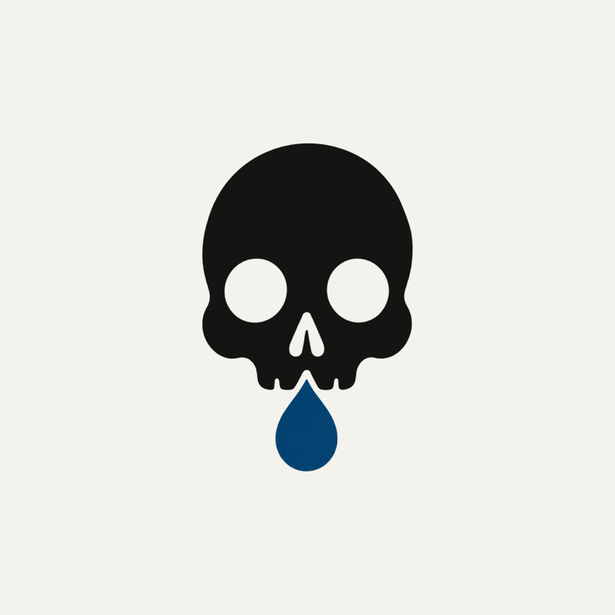

Questions, bug reports, feature requests, or confusion about reminders, streaks, or Preserved in Hydrate or Diedrate. This page gives users a direct place to get help.

Water tracker with a dark sense of humor, a status system, and reminders with appropriate gravity.
iPhone · Apple Watch · DahVio StudiosNo. There is no sign-up, and your log, streak, and settings stay on your device. Vessels, if you join one, uses an anonymous sign-in: no name, no email.
From the main screen, tap one of the quick-add amounts (8, 12, 16, or 24 oz, or 250, 500, 750, or 1000 mL) or enter a custom amount. You can also log from a widget or from Apple Watch. Your total and status update immediately. Made a mistake? Use Undo Last Entry to remove the most recent log. Preserved lets you set your own quick-log amounts.
By default, the app sends four local reminders a day — Morning, Midday, Evening, and Final Notice. You can change their times or turn any of them off in Settings. Once your goal is met, the rest of the day’s reminders stand down. They are scheduled entirely on your device and delivered silently.
It shows today’s record on your wrist. One tap logs a drink and the phone is informed; a mis-tap can be undone from the watch. Complications for your watch face come with Preserved.
A Preserved feature: a private group of up to six. Each week the group sees an anonymous tally of who remains preserved. No names, no rankings, no feed.
Only if you turn on Health sync in Settings. The app writes your logged water intake to Apple Health — it does not read your existing Health data.
A one-time in-app purchase that unlocks The Ledger, The Vessel and The Record widgets, Apple Watch complications, Vessels, custom quick-log amounts, full history and weekly insights, the full notice archive, and alternate app icons. No subscription, no renewal. Health sync, dark mode, reminder times, the Apple Watch app and The Specimen widget are free.
Open the Preserved screen and tap Restore Purchase. This checks your Apple ID for a prior purchase and unlocks it again. Make sure you're signed into the same Apple ID used for the original purchase.
Your streak counts consecutive days where your total logged water met or exceeded your daily goal. Falling short on a day resets the current streak, but your best streak is always saved.
Archive, Notice, Bulletin and Funereal unlock with Preserved. The Preserved icon also has to be earned by completing the One Hundred Days of Compliance trial. Change your icon from Settings once it's unlocked.
Yes. Hydrate or Diedrate stores your log, streak, and settings locally on-device, so logging water and viewing history does not require an internet connection. Vessels needs a connection to send and receive the group tally.
Your log is stored on your device, so deleting the app removes it. If you joined a Vessel, leave it first: leaving removes your membership and your daily reports from that group.
Email ray@dahvio.com with what happened, what device you're using, and what you expected to see. That makes it much easier to debug quickly.
Need help, want to report a bug, or have a suggestion for making Hydrate or Diedrate better (or worse, in the fun way)? Email is the best way to reach DahVio Studios.
ray@dahvio.com